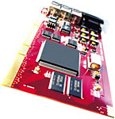

| The
D1 64RT is a replacement for the D1 Desktop 64 AV, the original uncompressed
10-bit SD-SDI realtime capture and playback video card with 6 channels of
AES/EBU digital audio (48KHz and 96KHz). The D164RT is perfect for Final Cut Pro3™ with one SD-SDI input, one SD-SDI output and captures video to a standard QuickTime™ file, so you can instantly move video between applications without having to ‘import’ and then ‘export’ your media. This is a excellent solution for editors wanting entry-level RealTime, and the worldclass quality of 10-bit uncompressed SDI video. Hardware Shipping. RT and Media Transfer software to be delivered as Free enhancements. |
|
 |
|
Specifications Mac OSX compatible SMPTE 259M 10-bit SD-SDI SD-Input - 4:2:2 (YCbrCr) SD-Output - 4:2:2 (YCbrCr) Audio sample rate converter RealTime uncompressed 10-bit I/O Programmable interface for future upgrades Audio output - 6 channels of AES/EBU digital audio (48KHz and 96KHz). Select either NTSC or PAL RGB playback using the ‘None’ codec for cross platform support. Video Genlock sync input. Supports 16-bits per channel for Adobe After Effects 5.5™. Compatible with popular applications: Apple’s Final Cut Pro3™ Adobe Premiere™ Adobe Photoshop™ Adobe After Effects™ Discreet Combustion™ Toolfarm’s ColorTheory DV™ Boris FX™ FREE Media Transfer Software. Functions as a second Mac monitor when not in use for real-time uncompressed playback. |
|